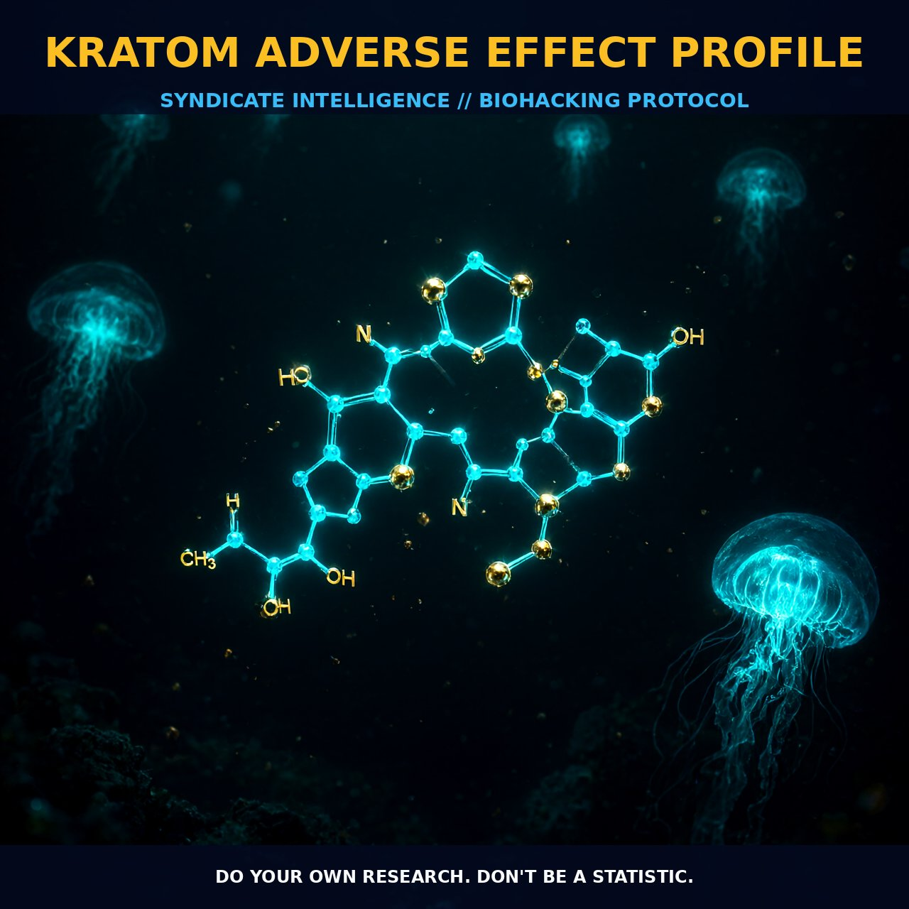

The Mechanism and Adverse Effects of Kratom

1. The Mechanism
Kratom, derived from the leaves of the Mitragyna speciosa tree, exerts its effects through a complex interplay of alkaloids, primarily mitragynine and 7-hydroxymitragynine. These compounds interact with a variety of receptors within the nervous system, including opioid receptors, particularly the mu, delta, and kappa subtypes. Additionally, kratom alkaloids can modulate other receptor systems such as adrenergic and serotonin receptors.
This multi-receptor binding profile leads to a range of physiological and psychological effects. The primary mechanisms involve the modulation of opioid signaling pathways, which can lead to analgesia and mood elevation. However, these effects can also trigger adverse reactions, particularly when the alkaloids interact with other biological systems.
2. Biological Leverage
The mechanism of action for kratom involves the activation of mu-opioid receptors, which mediate pain relief and euphoria. Additionally, kratom alkaloids can activate delta-opioid receptors, contributing to the sedative and analgesic effects. The activation of kappa-opioid receptors, which are often associated with dysphoria and aversion, can lead to a mixed profile of effects.
The interplay between these receptors can result in a unique psychoactive experience that varies with the dose and the individual’s physiology. Moreover, the interaction with adrenergic receptors can lead to increased alertness and energy, while serotonin receptor modulation can contribute to mood stabilization and anxiolytic effects.
Kratom’s adverse effects can be attributed to its multifaceted interaction with various biological systems. The activation of opioid receptors can lead to nausea, constipation, and gastrointestinal discomfort. This is often exacerbated by the modulation of adrenergic receptors, which can cause changes in heart rate and blood pressure, leading to palpitations and potential heart-related issues.
The alteration of serotonin and adrenergic pathways can also lead to mood changes, such as irritability and agitation. Furthermore, kratom can impact liver function, leading to liver-related issues such as liver damage or pain. The reported incidence of liver damage can be significant, with anecdotal evidence suggesting that even low-to-moderate doses may pose a risk.
Kratom also affects sexual function, with reports of decreased libido and erectile dysfunction. The exact mechanisms underlying these effects are not well understood but may involve alterations in hormone levels and neurotransmitter balance. Additionally, kratom use can lead to dry mouth, itching, and runny nose, indicating an impact on the autonomic nervous system. Seizures and respiratory issues have also been reported, suggesting that kratom can influence neurological and respiratory pathways.
3. Tactical Implementation
When considering the practical implementation of kratom, it is essential to understand the dosage range and timing that minimizes adverse effects while maximizing the desired benefits. Typically, users report that low-to-moderate amounts of kratom, around 2-5 grams, can provide analgesic and mood-enhancing effects with fewer side effects. Higher doses may increase the risk of adverse reactions, including nausea, constipation, and heart-related issues.
Therefore, it is advisable to start with lower doses and gradually increase to find the optimal level for individual tolerance and desired outcomes. Stacking kratom with other compounds can also influence its effects. For example, combining kratom with caffeine or other stimulants can enhance alertness and energy but may increase the risk of heart-related issues. Conversely, pairing kratom with anxiolytics like GABA agonists or CBD can help mitigate mood changes and anxiety.
Timing is also crucial; using kratom in the morning can provide a stimulating effect, while evening use may result in sedation and relaxation. However, users should monitor their response to these timing variations and adjust accordingly.
In conclusion, the adverse effect profile of kratom highlights the importance of dosing, timing, and stacking considerations to optimize its benefits while minimizing risks. By understanding the mechanics and biological leverage of kratom, users can better navigate its effects and tailor their approach to their specific needs and tolerances.
Prostar Life Hack
Start with low doses (2-5 grams) and gradually increase to find the optimal level for individual tolerance and desired outcomes. Monitor your response to timing variations and adjust accordingly. Pair kratom with anxiolytics like GABA agonists or CBD to mitigate mood changes and anxiety.
[ AUTHOR: LEAD TECHNICAL RESEARCHER ]